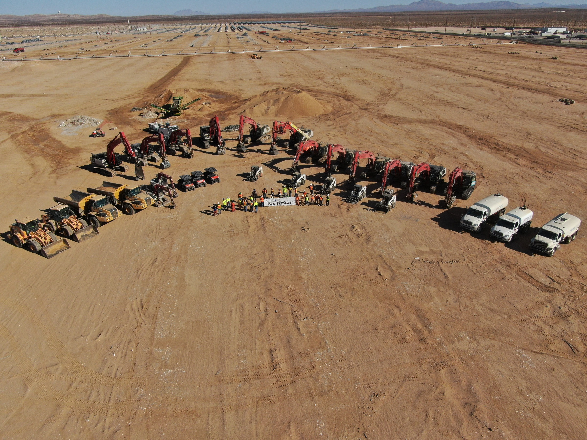

NorthStarWe Bring Answers.
NorthStarWe Bring Answers.Qualifications
Qualifications / 01
Qualifications / 01
Qualifications / Qualifications
A broader capability set for complex facility decisions.
For owners, procurement teams and capital-project leaders evaluating a specialty contractor, NorthStar brings demolition, abatement, environmental and facility-transition experience into one qualification conversation.

Evaluate the team behind the scope.
National scale is useful when it connects to the right people and relevant experience. Start with your facility type, location and work requirements; then assess the delivery entity, technical leadership and comparable projects.
Service breadthRelevant experienceDefined responsibilities